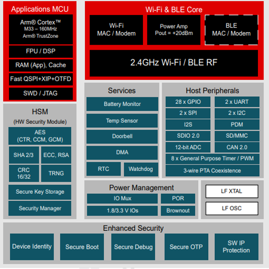

Hardware Overview¶
Important
The main source of information for CC35xx hardware is the Technical Reference Manual:
System Core¶
The system core is designed to run the wireless protocol stack from the network layer up to the user application.
- For CC35xx devices the system core is ARM Cortex M33
You can read more about ARM Cortex in the ARM Cortex-M33 documentation.
The network layer interfaces to the radio core through a software module called the Net driver. The RF driver runs on the system core and acts as an interface to the radio on the CC35xx, and also manages the power domains of the radio hardware and radio core. Documentation for the Net driver can be found at the TI Drivers API Reference.
Connectivity Core¶
The Connectivity Core within the CC35xx is a Cortex M3 processor responsible for both interfacing to the radio hardware, and translating complex instructions from the system core into bits that are sent over the air using the radio. The Connectivity Core implements the PHY and DATA Link layers of the protocol stack and is able to operate autonomously, this frees up the system core for higher-level protocol and application-layer processing.
The system core communicates with the Connectivity Core through a direct memory hardware interface, which is documented in the CC35xx SimpleLink Wireless MCU Technical Reference Manual. The connectivity core firmware is not intended to be used or modified by the application developer.
Flash, RAM, and Peripherals¶
The following in-system programmable SRAM options are available for the CC35xx. For a full memory of your device, please refer to the CC35xx datasheet.
| Device | Flash (kB) | SRAM (kB) |
|---|---|---|
| CC35xx | External | 1200 |
Supported Flashes¶
The CC35xx currently supports the following flash devices
| Vendor | Name | Size(MB) |
|---|---|---|
| ISSI | IS25WJ032F | 4 |
| ISSI | IS25WJ064F | 8 |
| Winbond* | W25Q32JW | 4 | |
| Winbond* | W25Q64JW | 8 | |
| Gigadevice | GD25LF32E | 4 |
| Gigadevice | GD25LF64E | 8 |
| Puya | PY25Q32LB | 4 |
| Puya | PY25Q64LB | 8 |
| Puya | PY25Q128LA | 16 |
| Puya | PY25Q256LC | 32 |
Warning
*The Winbond devices are not recommended for new designs due to performance limitations
Note that there is no DRR support or OSPI support (QSPI only)
The following list are experimental flashes are supported but not yet system tested
| Vendor | Name | Size(MB) |
|---|---|---|
| ISSI | IS25WJ128F | 16 |
| Macronix | MX25U3235F | 4 |
| Macronix | MX25U6435F | 8 | ||
The CC35xx also hosts a full range of peripherals including UART, I2C, I2S, AES, TRNG, temperature and battery monitors, 4x 32-bit timers, 2x SSI, and an integrated Hardware Security Module (HSM).
Below is a sample device block diagram. Please check the datasheet for an accurate block diagram of your device.

Fig. 1 SimpleLink™ CC355x Block Diagram
Startup Sequence¶
For a complete description of the CC35xx reset sequence, see the CC35xx SimpleLink Wireless MCU Technical Reference Manual.
Important
The main source of information for CC35xx hardware is the Technical Reference Manual: